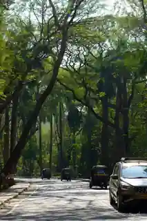
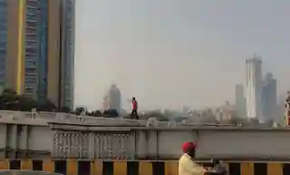

Where the trail begins.
I grew up in a village near hills. I still like getting outside to trek or take photographs.
Village hills, Mumbai, and the physics lab.
A few places, a lot of questions.
Come along for the ride.
From the hills to the physics lab, with stops along the way. The landscape is an illustration.
I grew up in a village near hills. I still like getting outside to trek or take photographs.
I studied a polyaniline and magnetite composite for electromagnetic interference shielding. The project brought materials fabrication and characterization together.
Photography gives me a reason to slow down and pay attention to light. I was part of IIT Bombay’s photography team at Inter IIT 7.0 in 2024.

At BARC, I studied the Raman spectrum of Na₂Cu₂TeO₆ in a diamond-anvil cell. Related high-pressure X-ray diffraction measurements took me to INDUS-2 at RRCAT.
My MSc research looked at transparent electrodes for tandem solar cells. I modelled and studied thin layers of indium zinc oxide and silver to balance transmission and conductivity.
As a Junior Research Fellow, I work on indium flip-chip interconnects and 3D integration for quantum devices.
